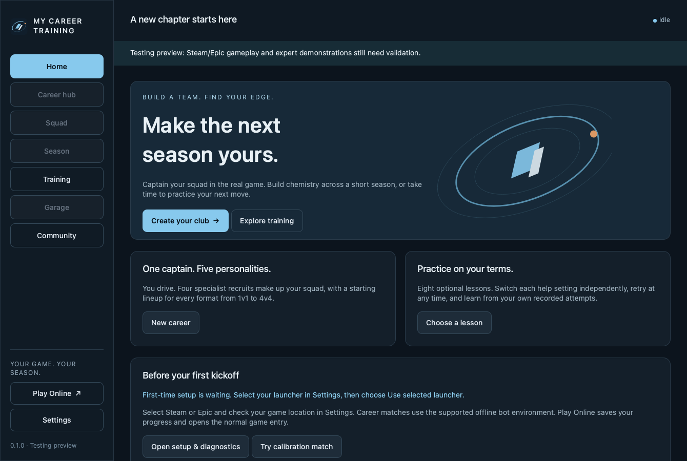

01 / CAREER
A season of your own.
Lead your club through a six-round league, track the table, and chase the title across 1v1 to 4v4 matches.
YOU PLAY. THE SEASON MOVES.
Captain your own squad. Play a career in Rocket League. Build your mechanics between matches.
Prefer no installation? Get the portable ZIP

MAKE EVERY SESSION COUNT
A career to come back to, a team to grow with, and space to work on the mechanics you want to learn.
Lead your club through a six-round league, track the table, and chase the title across 1v1 to 4v4 matches.
Pick four persistent bot recruits, shape your lineup, and develop a team with different roles and personalities.
Try eight optional drills, from speed flips to flip resets. Record attempts and replay them with a wireframe ghost.
A FEW CLICKS TO GET STARTED
Bring your own installed copy of Rocket League and a signed-in Steam or Epic account.
Open the player guideClose Rocket League, download the Windows installer, and follow the setup steps.
Open Settings, choose Steam or Epic, and confirm where Rocket League is installed.
Check that your game connects, then create your career or jump into a drill.
Windows package and installer checks passed. Live Steam and Epic gameplay still needs testing. This unsigned preview has experimental, unranked bots; expert demonstrations and verified community-map loading are not included yet.
Release notes & file checksumsTHE NEXT SESSION IS YOURS